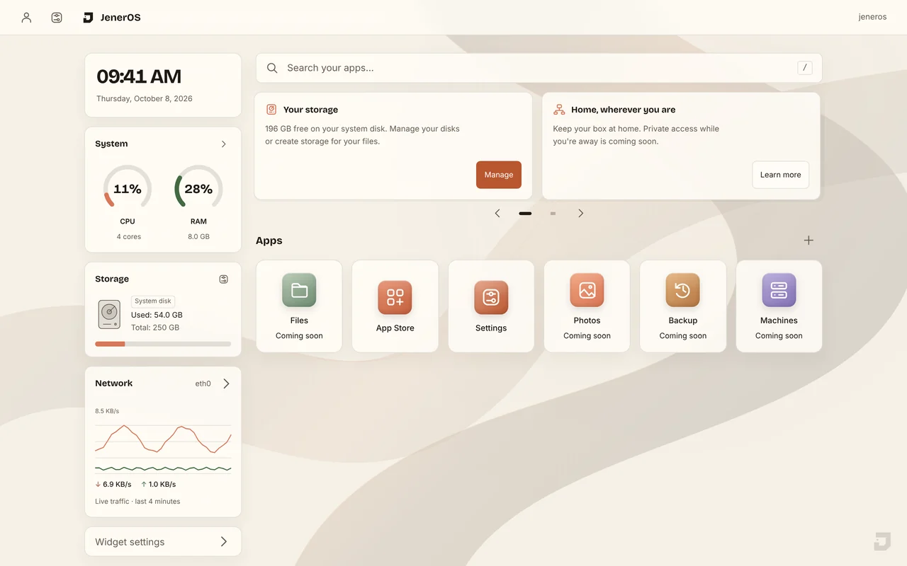
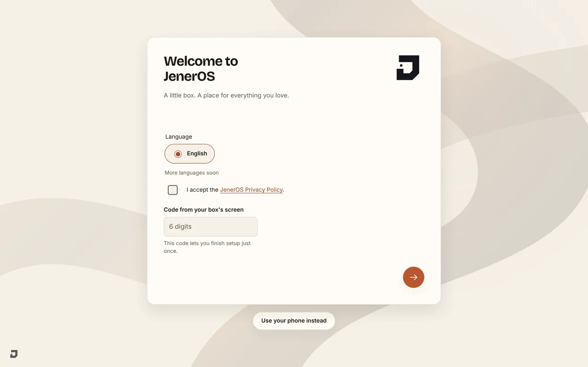
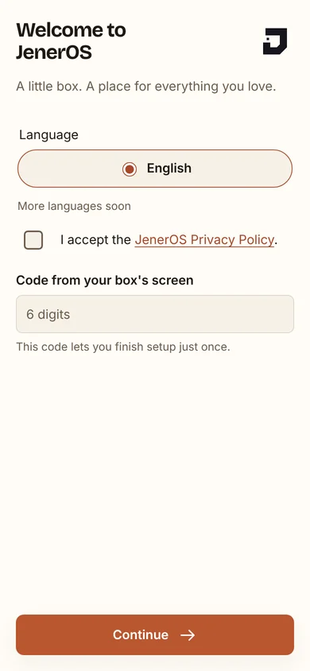
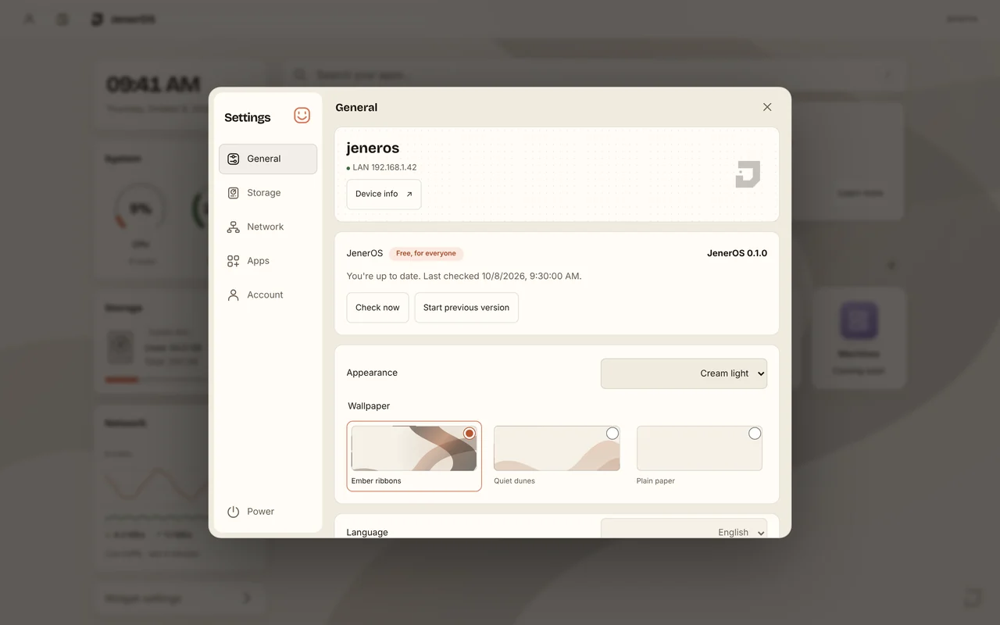
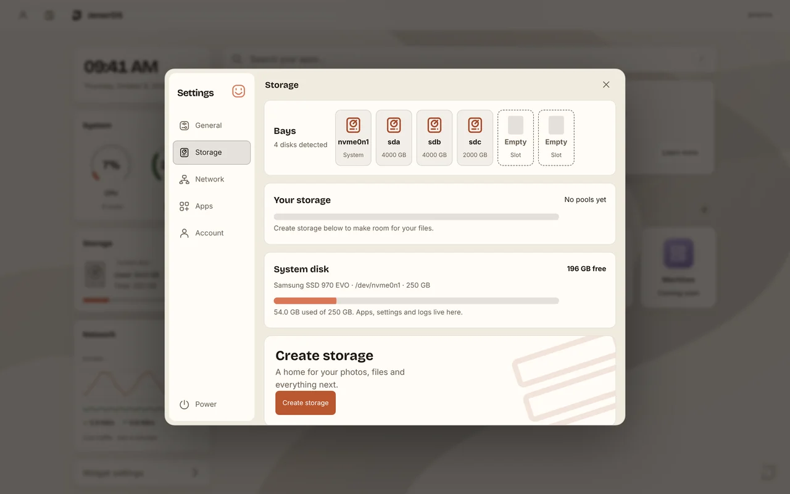
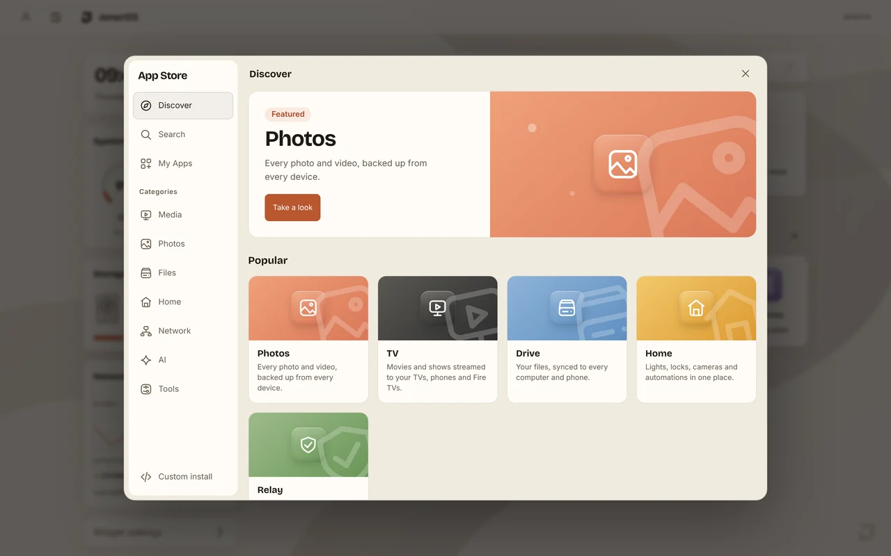

JenerOS
Make yourself at home.

Your stuff lives at home.
A new life for your old PC. One home for the things you love.
Everything, right here.
Files, photos, backups and machines. A familiar place to begin.


Connected
Set up from your phone.
Scan the code on your box. Make it yours from the comfort of your phone.

A place for every setting.
Your box, your preferences. All together in one calm window.

Two disks. One safe place.
100% mirrored Illustration
Your storage is ready
Storage in a few taps.
See your disks. Pick a mirror to keep a second copy. Every choice, explained before you erase.
Previous systemReady when you need it.Your files stay put.
New systemA fresh start.A second system keeps your place.
Back to the working version
Updates that undo themselves.
If an update cannot start, your box goes back to the working version. Your files stay put.

Your own app store.
Photos, movies, files and your smart home. The store is here; apps arrive one by one.